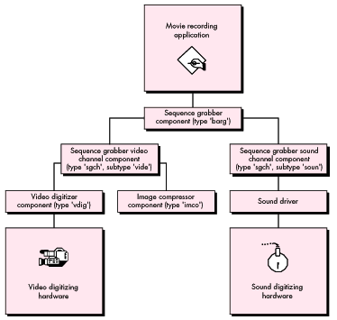
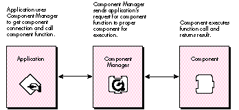
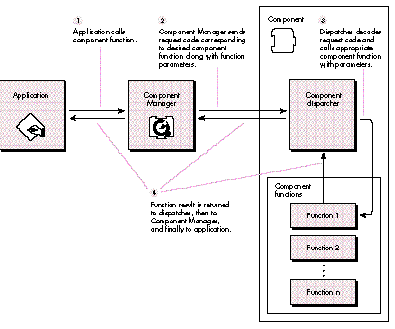
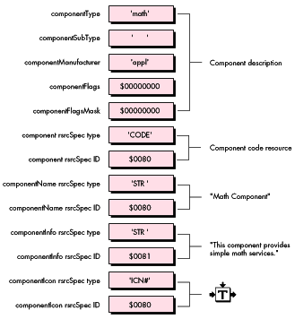
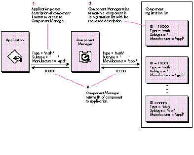
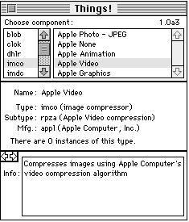
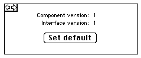
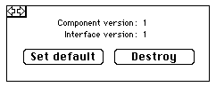

Programmers first saw the Component Manager as part of the QuickTime 1.0 system
extension. Now that the Component Manager is part of System 7.1, components aren't
just for QuickTime programmers any more. This article shows you how to take
advantage of the power and flexibility of components as a way to give extended
functionality to any Macintosh application.
Software developers are continually searching for ways to avoid reinventing the
proverbial wheel every time they need new capabilities for their programs. A new
approach is available with components. Components are modules of functionality that
applications can share at run time. They enable applications to extend the services of
the core Macintosh system software with minimal risk of introducing
incompatibilities (unlike, for example, trap patching).
As Figure 1 suggests, components also encourage a building-block approach to solving
complex problems. Higher-level components can call lower-level components to build
sophisticated functionality, while at the same time making the application program
interface (API) much simpler. What's more, because components are separate from
an application that uses them, you can modify and extend components without affecting
the application.
Components are maintained by the Component Manager, which is responsible for
keeping track of the components available at any given time and of the particular
services they provide. The Component Manager provides a standard interface through
which applications establish connections to the components they need.
Almost anything you can dream up can be a component -- video digitizer drivers,
dialogs, graphics primitives, statistical functions, and more. QuickTime 1.0 itself
contains a number of useful components, including the movie controller, the sequence
grabber, and a variety of image compressors and decompressors (codecs ), all of
which are available to any client application.

Figure 1 Using Components as Software Building Blocks
To demonstrate the all-around usefulness of components, we'll examine the
development and implementation of a component that does some rather trivial
mathematical calculations. This example will help us focus on concepts rather than
getting lost in the details of solving a complex problem. We'll build a fairly generic
component template that you can use in your own designs. We'll also discuss some
advanced component features, such as extending component functionality, capturing
components, and delegating component functions. Finally, we'll show you some
techniques and tools for debugging your components. The accompanyingDeveloper CD
Series disc contains our example component's source code, a simple application to test
our component, and the debugging tools.
Note that this article doesn't spend a great deal of time explaining how applications can
find and use components. We assume that you've invested some effort in reading
theQuickTime Developer's Guide (part of the QuickTime Developer's Kit). If you
haven't, we strongly urge you to do so, since theDeveloper's Guide contains the
definitive description of the Component Manager.
SHOULD YOU WRITE A COMPONENT?
OK, components sound interesting, but should you write one? Why write a component
when you can just code the functionality you need directly into your application or
write a device driver? Here are a few reasons to choose components over the
alternatives:
Now that you know the advantages of components, you have to decide whether the
functionality you need is a good candidate for a component. To do this, ask yourself the
following:
A "yes" to more than one of these questions means that components are probably a good
approach for your next product. But you still have one last question to answer: has
someone else already written a component that solves your problem? To find out, you
need to contact Apple's Component Registry group (AppleLink REGISTRY) and ask them.
These folks maintain a database of all registered component types, subtypes, and
manufacturers, as well as the corresponding APIs (if they're publicly available). A
check with the Registry is mandatory for anyone who's contemplating writing a
component.
If after all this you find that you're still about to embark into uncharted territory,
read on, and we'll endeavor to illuminate your passage.
Client applications use the Component Manager to access components. As shown in
Figure 2, the Component Manager acts as a mediator between an application's requests
for component services and a component's execution of those requests. The Component
Manager uses acomponent instance to determine which component is needed to satisfy
an application's request for services. An instance can be thought of as an application's
connection to a component. We'll have more to say about component instances later on.

Figure 2 How Applications Work With Components
Conceptually, components consist of two parts: a collection of functions as defined in
the component's API, and a dispatcher that takes care of routing application requests to
the proper function. These requests are represented by request codes that the
Component Manager maps to the component functions. Let's take a look at both the
component functions and the component dispatcher in detail.
COMPONENT FUNCTIONS
There are two groups of functions that are implemented in a component. One group does
the custom work that's unique to the component. The nature of these functions depends
on the capabilities that the component is intended to provide to clients. For example,
the movie controller component, which plays QuickTime movies, has a number of
functions in this category that control the position, playback rate, size, and other
movie characteristics. Each function defined in your component API must have a
corresponding request code, and you must assign these request codes positive values (0
or greater).
The second group of functions comprises the standard calls defined by the Component
Manager for use by a component. Currently, four of these standard callsmust be
implemented by every component: open, close, can do, and version. Two more request
codes, register and target, are defined, but supporting these is optional. The standard
calls are represented by negative request codes and are definedonly by Apple.
Here's a quick look at each of the six standard calls.
The open function. The open function gives a component the opportunity to
initialize itself before handling client requests, and in particular to allocate any
private storage it may need. Private storage is useful if your component has
hardware-dependent settings, local environment settings, cached data structures, IDs
of component instances that may provide services to your component, or anything else
you might want to keep around.
The close function. The close function provides for an orderly shutdown of a
component. For simple components, closing mainly involves disposing of the private
storage created in the open function. For more complex components, it may be
necessary to close supporting components and to reset hardware.
The can do function. The can do function tells an application which functions in the
component's API are supported. Clients that need to query a component about its
capabilities can use the ComponentFunctionImplemented routine to send the component
a can do request.
The version function. The version function provides two important pieces of
information: the component specification level and the implementation level. A change
in the specification levelnormally indicates a change in the basic API for a particular
component class, while implementation- level changes indicate, for example, a bug fix
or the use of a new algorithm.
The register function. The register function allows a component to determine
whether it can function properly with the current system configuration. Video
digitizer components, for example, typically use register requests to check for the
presence of their corresponding digitizing hardware before accepting registration with
the Component Manager. A component receives a register request code only if it
explicitly asks for it. We'll see how this is done when we walk through our sample
component.
The target function. The target function informs your component it has
beencaptured by another component. Capturing a component is similar to subclassing
an object, in that the captured component is superseded by the capturing component.
The captured component is replaced by the capturing component in the component
registration list and is no longer available to clients. We'll discuss the notion of
capturing components in more detail later.
THE COMPONENT DISPATCHER
All components must have a main entry point consisting of a dispatcher that routes the
requests the client application sends via the Component Manager. When an application
calls a component function, the Component Manager passes two parameters to the
component dispatcher -- a ComponentParameters structure and a handle to any
private storage that was set up in the component's open function. The
ComponentParameters structure looks like this:
typedef struct {
unsigned char flags;
unsigned char paramSize;
short what;
long params[kSmallestArray];
} ComponentParameters;
The first two fields are used internally by the Component Manager and aren't of much
interest here. The what field contains the request code corresponding to the
component function call made by the application. The params field contains the
parameters that accompany the call.
Figure 3 shows a detailed view of how a component function call from an application is
processed. The component dispatcher examines the what field of the
ComponentParameters record to determine the request code, and then transfers control
to the appropriate component function.
REGISTERING A COMPONENT
Before a component can be used by an application, it must be registered with the
Component Manager. This way the Component Manager knows which components are
available when it's asked to open a particular type of component.

Figure 3Processing an Application's Request for Component Services
Autoregistration versus application registration. There are two ways that
you can register a component. By far the easiest way is to build a standalone
component file of type 'thng'. At system startup, the Component Manager will
automatically register any component that it finds in files of type 'thng' in the System
Folder and in the Extensions folder (in System 7) and its subfolders. The 'thng'
component file must contain both your component and the corresponding component
('thng') resource. The definition of this resource can be found in the Components.h
header file and is shown below.
typedef struct {
unsigned long type; /* 4-byte code */
short id;
} ResourceSpec;
typedef struct {
ComponentDescription td; /* Registration parameters */
ResourceSpec component;
/* Resource where code is found */
ResourceSpec componentName; /* Name string resource */
ResourceSpec componentInfo; /* Info string resource */
ResourceSpec componentIcon; /* Icon resource */
} ComponentResource;
Figure 4 shows the contents of the component resource that we'll use for the example
component.

Figure 4 Math Component Resource
An application can also register a component itself using the Component Manager call
RegisterComponent or RegisterComponentResource. As we'll see, this registration
method facilitates symbolic debugging of components.
Global versus local registration. Components can be registered locally or
globally. A component that's registered locally is visible only within the A5 world in
which it's registered, whereas a globally registered component is available to all
potential client applications. Typically, you register a component locally only if you
want to restrict its use to a particular application.
To help you understand how to write a component, we're going to go through the whole
process with an example -- in this case, a simple math component. We start by
contacting the Apple Component Registry group, and to our astonishment (and their
bemusement), we find that there are no registered components that do simple math!
We assume for the moment that the arithmetic operators in our high-level
programming language are unavailable and that our application is in desperate need of
integer division and multiplication support.
We create a component called Math that performs integer division and multiplication.
THE FUNCTION PROTOTYPE DEFINITION
We need to define function prototypes for each of the calls in our component API --
namely, DoDivide and DoMultiply. The function prototype for the DoDivide component
call can be found in MathComponent.h and is shown below. The declaration for the
DoMultiply function is similar.
pascal ComponentResult DoDivide (MathComponent mathInstance,
short numerator, short denominator, short *result) =
ComponentCallNow (kDoDivideSelect, 0x08);
This resembles a normal C language function prototype with a relatively
straightforward parameter list. The mathInstance parameter is the component
instance through which the application accesses the component; we'll see how an
application gets one of these instances in a moment. The numerator and denominator
parameters are self-explanatory and are passed in by the calling application as well.
The contents of the last parameter, result, are filled in by the DoDivide function upon
completion.
Those of you who have a passing familiarity with C are probably more than a little
curious about the last portion of the declaration. ComponentCallNow is a macro defined
by the Component Manager (see "Inside the ComponentCallNow Macro" for the nuts and
bolts of how the macro works). Its main purpose is to identify a routine as a
component function, as opposed to a normal C function. When an application calls the
DoDivide function, the macro is executed. This causes a trap to the Component Manager
to be executed, allowing the Component Manager to send a message to the component
responsible for handling the function.
The first parameter to the ComponentCallNow macro is an integer value representing
the request code for the integer division function. As noted earlier, your component's
dispatcher uses this request code to determine what function has been requested. Recall
that you may only define request codes that are positive.
The second parameter is an integer value that indicates the amount of stack space (in
bytes) that's required by the function for its parameters, not including the component
instance parameter. Be careful to note that Boolean and single-byte parameters may
need to be passed as 16- bit integer values (see the section "Eleven Common Mistakes"
for details). For the Math component, the space required for the DoDivide function is
two 16-bit integers followed by a 32-bit pointer, for a total of eight bytes.
THE MATH COMPONENT DISPATCHER
The dispatcher of the Math component is shown in its entirety below. Notice that the
dispatcher executes its component functions indirectly by calling one of two Component
Manager utility functions -- CallComponentFunction or
CallComponentFunctionWithStorage. You use CallComponentFunction when your
component function needs only the fields in the ComponentParameters structure, and
CallComponentFunctionWithStorage when it also needs access to the private storage
that was allocated in your component's open function.
pascal ComponentResult main (ComponentParameters *params,
Handle storage)
{
// This routine is the main dispatcher for the Math component.
ComponentResult result = noErr;
// Did we get a Component Manager request code (< 0)?
if (params->what < 0) {
switch (params->what)
{
case kComponentOpenSelect: // Open request
result = CallComponentFunctionWithStorage
(storage, params,
(ComponentFunction) _MathOpen);
break;
case kComponentCloseSelect: // Close request
result = CallComponentFunctionWithStorage
(storage, params,
(ComponentFunction) _MathClose);
break;
case kComponentCanDoSelect: // Can do request
result = CallComponentFunction (params,
ComponentFunction) _MathCanDo);
break;
case kComponentVersionSelect: // Version request
result = CallComponentFunction (params,
(ComponentFunction) _MathVersion);
break;
case kComponentTargetSelect: // Target request
result = CallComponentFunctionWithStorage
(storage, params,
(ComponentFunction) _MathTarget);
break;
case kComponentRegisterSelect: // Register request not
// supported
default: // Unknown request
result = paramErr;
break;
}
}
else { // One of our request codes?
switch (params->what)
{
case kDoDivideSelect: // Divide request
result = CallComponentFunction (params,
(ComponentFunction) _MathDoDivide);
break;
case kDoMultiplySelect: // Multiply request
result = CallComponentFunction (params,
(ComponentFunction) _MathDoMultiply);
break;
default: // Unknown request
result = paramErr;
break;
}
}
return (result);
}
A drawback of the dispatcher is the overhead incurred in having the Component
Manager functions mediate all your requests. To reduce your calling overhead and thus
improve performance, you can use a fast dispatch technique. While this technique is
used in most of the QuickTime 1.0 components, this is the first time that it's been
publicly described. See "Fast Component Dispatch" for details.
THE MATH COMPONENT DODIVIDE CALL
For the Math component, the DoDivide function is declared as follows:
pascal ComponentResult _MathDoDivide (short numerator,
short denominator, short* quotient)
{
ComponentResult result = noErr;
if (denominator != 0) {
*quotient = numerator/denominator;
}
else {
*quotient = 0;
result = -1L; // Divide by zero not allowed
}
return (result);
}
The key thing to note here is that component functions must always return a result
code. The return value is 32 bits and is defined in the API for the component. In our
case, a value of 0 (noErr) indicates successful completion of the call and a negative
value indicates that an abnormal completion occurred. Note that for some components a
negative result code could indicate that the returned parameter values should be
interpreted in a particular manner. For example, a video digitizer may return a
negative result code of notExactSize from the VDSetDestination call. This doesn't
indicate an error. It just means that the requested size wasn't available on the digitizer
and that the next closest size was given instead. Also, since this result code is 32 bits,
you could actually return pointers or handles as results, rather than error codes.
In this section, we look at how an application uses the Math component. First, the
application has to ask the Component Manager to locate the Math component. If the Math
component is found, the application can open it and make calls to it.
FINDING AND OPENING THE MATH COMPONENT
We tell the Component Manager which component we're looking for by sending it a
ComponentDescription record containing the type, subtype, and manufacturer codes
for the desired component. We then call the Component Manager routine
FindNextComponent to locate a registered component that fits the description. The code
fragment below shows how this looks.
ComponentDescription mathDesc; Component mathComponentID; // Math component description mathDesc.componentType = mathComponentType; mathDesc.componentSubType = 0L; // Wild card mathDesc.componentManufacturer = 'appl'; mathDesc.componentFlags = 0L; // Wild card mathDesc.componentFlagsMask = 0L; // Wild card // Find a Math component mathComponentID = FindNextComponent (nil, &mathDesc);
The zeros in the componentSubType, componentFlags, and componentFlagsMask fields
indicate that they function as wild cards. If the Component Manager was unable to
locate a component matching the description, it returns zero.
Assuming the Component Manager returned a nonzero component ID, we now open the
component using the OpenComponent call, as follows:
mathInstance = OpenComponent (mathComponentID);
OpenComponent returns a unique connection reference -- a component instance -- to
the Math component. If the component instance is nonzero, we're ready to use the
component. Figure 5 illustrates the process of finding a component.

Figure 5How Applications Find Components
MAKING CALLS TO THE MATH COMPONENT
The Math component performs only two functions, dividing and multiplying two
integers. To ask it to divide two numbers for us, we just call the component function
DoDivide with the component instance value we got by opening the Math component.
result = DoDivide (mathInstance, numerator, denominator, "ient);
When we're done with the component, we close the connection with the CloseComponent
call, like this:
result = CloseComponent (mathInstance);
That's all there is to it. You can see that making component function calls is much like
making any other kind of call.
After defining the basic functionality for your component, you may find that you want
to extend it beyond what you originally specified in your component API. There are
three ways to extend the functionality of existing components:
The following sections examine these methods in detail.
ADDING NEW FUNCTIONALITY TO A SPECIFIC COMPONENT
IMPLEMENTATION
Let's add some more functionality to the Math component. The MoMath component
extends the Math component by adding an addition function. A new function prototype is
added for the new function in MoMathComponent.h, along with a new request code,
kDoAddSelect.
pascal ComponentResult DoAdd (MathComponent mathInstance,
short firstNum, short secondNum, short* result) =
ComponentCallNow (kDoAddSelect, 0x08);
Request codes for implementation-specific functions must have an ID of 256 or
greater. This is required to differentiate these functions from those that are generally
defined in the API for the component type. Implementation-specific functions usually
provide capabilities beyond those specified in the component API, and thus offer
developers a way to differentiate their component implementations from those of
competing developers. The following code fragment from the MoMath component
dispatcher shows support for the DoAdd function:
case kDoAddSelect: // Add function
{
result = CallComponentFunction (params,
(ComponentFunction) _MoMathDoAdd);
break;
}
How does the calling application know that a superset of the Math component is
around? To start with, the caller needs to know that such a beast even exists.
Remember, this is an extension of a component implementation by a particular
vendor, not of the component type in general. In this case, the extended component is
differentiated from its basic implementation by its manufacturer code. Both Math and
MoMath have the same component type ('math'), but their manufacturer codes differ
('appl' for Math and 'gwck' for MoMath). Note that the subtype field can be used in a
similar manner, but it's typically used to distinguish algorithmic variations of a
general component type. For example, image compressor components ('imco') use the
subtype field to differentiate various types of compression algorithms ('rle ' for run
length encoding, 'jpeg' for JPEG, and so on). The manufacturer field is used to identify
vendor-specific implementations of a particular compression algorithm.
If the application is aware that this extended component exists, it can use the
information stored in the component's 'thng' resource to locate and open it. Once the
component has been opened, the application calls the extended function just as it would
any other component function.
ADDING NEW FUNCTIONALITY TO A COMPONENT TYPE
In the preceding example, we used the manufacturer code to hook in new functionality
to the Math component; this allowed a specific implementation to extend the interface.
In reality, we would be better off extending the component by defining a change to the
Math component API, so that all components of this type would have an interface
defined for the new addition function. Of course, this is an option only when you're the
owner of the component API. Changing component APIs that are owned by others (for
instance, by Apple) is a good way to break applications, and no one appreciates that,
least of all your users.
If you're going to take this route, be sure that the existing API is left unchanged, so
that clients using the old component's API can use your new component without having
to be modified. In addition, it's important to update the interface revision level of
components that implement the new API, so that clients can determine whether a
particular component implementation supports the new API.
MODIFYING EXISTING FUNCTIONALITY
Modifying existing functionality is a little more complicated than adding functionality
to a component type. In the example component, the DoDivide function divides two
16-bit integers, truncating the result. We would actually get a better answer if the
result were rounded to the nearest integer. We don't need to add a new call to do this,
since what we really want to do is replace the implementation of the existing call with
a more accurate version. On the other hand, the Mathcomponent does an acceptable job
of multiplying two integers, so we don't need to override that function. Instead, we'll
use the multiply function that's already implemented.
We can do this by writing a component that does the following:
Let's start by writing a new component -- in the example code, it's called
NuMathComponent -- that contains a dispatcher, as well as functions to handle the
Component Manager request codes and the new DoDivide routine. We use a register
routine to check for the availability of a Math component before we allow the NuMath
component to be registered. If no Math component is available, obviously we can't
capture it, and we shouldn't register. We also set cmpWantsRegisterMessage (bit 31)
in the componentFlags field of the ComponentDescription record in the NuMath
component's 'thng' resource to let the Component Manager know that we want a chance
to check our environment before we're registered. With this flag set, the sequence of
requests that NuMath will get at registration time will be open, register, and close.
The NuMath component register routine is as follows:
pascal ComponentResult _NuMathRegister (void)
{
// See if a Math component is registered. If not, don't register
// this component, since it can't work without the Math component.
// We return 0 to register, 1 to not register.
ComponentDescription mathDesc;
mathDesc.componentType = mathComponentType;
mathDesc.componentSubType = 0L; // Wild card
mathDesc.componentManufacturer = 'appl';
mathDesc.componentFlags = 0L; // Wild card
mathDesc.componentFlagsMask = 0L; // Wild card
return ((FindNextComponent (nil, &mathDesc) != 0L) ? 0L : 1L);
}
The original Math component ID is now effectively removed from the Component
Manager's registration list. This means that the Math component is now hidden from
all other clients, except those that already had a connection open to it before it was
captured.
We then open an instance of the Math component, and use the ComponentSetTarget
utility (defined in MathComponent.h) to inform Math that it's been captured by
NuMath.
result = ComponentSetTarget (mathInstance, self);
Why does a component need to know that it's been captured? If a captured component
makes use of its own functions, it needs to call through the capturing component
instead of through itself, becausethe capturing component may be overriding one of the
calls that the captured component is using. A captured component does this by keeping
track of the component instance that the ComponentSetTarget call passed to it and by
using that instance to make calls to the capturing component.
When the NuMath Comp;onent receives a divide request code, we dispatch to the new
DoDivide function, effectively overriding the DoDivide function that was implemented
in the Math component. However, when we receive a multiply request code, we delegate
this to the captured Math component, since we aren't overriding the multiply function.
We do this by simply making a DoMultiply call to the Math component, passing in the
parameters that the NuMath component was provided with.
result = DoMultiply (mathInstance, firstNum, secondNum,
multiplicationResult);
In the close routine of the NuMath component, we remember to close the instance of the
Math component we were using, and also to uncapture it so that we restore the system
to its original state.
result = CloseComponent (mathInstance); result = UncaptureComponent (mathComponentID);
THAT WASN'T SO BAD, WAS IT?
As you can see, adding new functionality is no big deal. As always, however, you should
notify developers who may use your component of any late-breaking interface changes.
You want to be sure that everyone's writing code that conforms to your most recent
component specification.
You may encounter some pitfalls during the development of your component. Here we
discuss 11 common mistakes that we've either made personally or observed other
developers make. We hope that you'll learn from our own fumblings and save yourself
time and frustration.
Allocating space at registration time. Generally, it's best if your component
allocates its storage only when it's about to be asked to do something -- that is, when it
has received a kOpenComponentSelect request code. This way, memory isn't tied up
unnecessarily. Remember, your component maynever be called during a given session,
and if it's not, it shouldn't hang out sucking up memory some other process might be
able to use.
Allocating space in the system heap. The system heap shouldn't be your first
choice as a place to put your component globals. The system heap is generally reserved
for system-wide resources (big surprise), and most components fall into the category
of application resources that needn't be resident at all times. Consider carefully
whether you need to scarf up system space. In addition, if your component is registered
in an application heap, you should never try to allocate space in the system heap. The
fact that you're registered in an application heap probably indicates that there isn't
any more space in the system heap for you to grab.
Not supporting the kComponentVersionSelect request code. This is a pretty
nasty omission for several reasons. First, this is theeasiest request code to implement;
it takes only a single line of code! What are you, lazy? (Don't answer that.) Second,
clients may use the API version level to keep track of extended functionality -- it may
be that version 2 of a component interface contains additional calls over version 1, and
a client certainly has reason to want to know that. Third, clients may use the
component version to determine, for example, whether the component in question
contains a recent bug fix.
Incorrectly calculating the parameter size for your component function
prototype. If you do this, you'll probably notice it right after calling the offending
component function, since your stack will be messed up by however many bytes you
failed to calculate correctly. A common instance of this error occurs when calculating
the space required by a function call that has char or Boolean parameters. Under
certain circumstances, Boolean and char types are padded to two bytes when passed as
function parameters.
To illustrate, we'll look at two example declarations. How many bytes of stack space
need to be reserved for the parameters of the following function?
pascal ComponentResult I2CSendMessage (ComponentInstance ti,
unsigned char slaveAddr, unsigned char *dataBuf, short byteCount)
The correct answer is eight bytes. The slaveAddr parameter is promoted to two bytes,
the dataBuf pointer takes four bytes, and the byteCount takes two bytes. The rest of the
declaration then takes the following form:
= ComponentCallNow (kI2CSendMessageSelect, 0x08);
Let's look at the next example. How many bytes of stack space does this function
require?
pascal ComponentResult MyFunction (ComponentInstance ti,
Boolean aBoolean, char aChar, short *aPointer)
The correct answer is six bytes. The aBoolean parameter takes one byte, the aChar
parameter takes one byte, and the aPointer parameter takes four bytes. What's that?
Didn't we just say that Boolean and char parameters got padded to two bytes? We
certainly did, but these types get padded only when an odd number of char or Boolean
parameters occurs consecutively in the declaration. Because we could add one byte for
the Boolean to the one byte for the char following it, we didn't need to do any padding
-- the total number of bytes was even (two bytes), and that's what's important. In the
first example, this didn't work. We added one byte for the char to the four bytes for the
pointer following it, and got five bytes, and so we needed to pad the char parameter by
one byte. The rest of the declaration for the second example is
= ComponentCallNow (kMyFunctionSelect, 0x06);
Registering your component when its required hardware isn't available.
If your component doesn't depend on specific hardware functionality, don't worry
about this. If it does (as, for example, video digitizers do), make sure you check for
your hardware before you register your component. The Component Manager provides
a flag, cmpWantsRegisterMessage, that you can set in the componentFlags field of your
component description record to inform the Component Manager that your component
wants to be called before it's registered. This gives your component an opportunity to
check for its associated hardware, and to decline registration if the hardware isn't
available.
Creating multiple instances in response to OpenComponent calls when
your component doesn't support multiple instances. Only you can know
whether your component can be opened multiple times. For instance, the Math
component is capable of being opened as many times as memory allows (although our
sample code restricts the number of open instances to three for the sake of
illustration). Normally, a component that controls a single hardware resource should
be opened only once and should fail on subsequent open requests. This will prevent
clients from oversubscribing your component.
Not performing requisite housekeeping in response to a CloseComponent
call. Bad things will happen, especially if you have hierarchies of components! As
part of your close routine, remember to dispose of your private global storage and to
close any drivers, components, files, and so on that you no longer need.
Allowing multiple instances from a single registration of a hardware
component instead of allowing a single instance from each of multiple
registrations. While this isn't really a common mistake today, we want to
emphasize that there's a big difference between designing your component to allow
multiple instances versus registering the component multiple times and allowing each
registered component to open only once. In the case of a generic software library
element (like Math), there's no problem with multiple instances being opened. In the
case of a hardware resource that's being controlled with acomponent, it's almost
always preferable to register the component once for every resource that's available
(four widget cards would result in four different registrations rather than one
registration that can be opened four times).
Why does it matter? Consider an application whose sole purpose in life is to manage
components that control hardware resources. It may be selecting which resource to
use, which one to configure, or which one to pipe into another. It's much more natural
to ask the Component Manager to provide a list of all components of a certain type than
it is to open each component that fits the criterian times (until it returns an open
error) in order to determine how many are available.
To kill a dead horse, suppose we have three identical video digitizers, and we want to
convey that information to the user via a menu list. If all are registered separately, we
can easily determine how many video digitizers are available (without even opening
them) by using the FindNextComponent call. If only one were registered, the list
presented to the user would only be a partial list. Take the blind leap of faith: register
duplicate hardware resources!
As a final note, if you're registering a single component multiple times, be sure that
the component name is unique for each registration. This allows users to distinguish
between available components (as in the menu example in the previous paragraph),
and it also helps you avoid the next gotcha.
Always counting on your component refCon being preserved. We know this
may be upsetting to many of you, but there exists a situation in which your component
refCon may not be valid. A component refCon (similar to a dialog, window, or control
refCon) is a 4-byte value that a component or client can use for any purpose. It's
accessed through a pair of Component Manager calls, GetComponentRefcon and
SetComponentRefcon. Component refCons are frequently used to hold useful
information such as device IDs or other shared global data, and so can be quite critical
to a component. We can hear you now . . . "What ? You're going to nuke myglobal data
reference?!" Well, not exactly -- it's just not as immediately accessible as you would
like it to be. Don't worry, it's possible to detect when your component is in this
situation and retrieve the refCon from it, as long as you follow a few simple steps.
The situation in question arises when there's not enough room in the system heap to
open a registered component. This happens when you run an application (that uses
your component) in a partition space so large that all free memory is reserved by the
application. This will prevent the system heap from being able to grow. When the
application calls OpenComponent, the component may be unable to open in the system
heap because there's no available space. In this case, the Component Manager willclone
the component. When a component is cloned, a new registration of the component is
created in the caller's heap, and the component ID of the cloned component is returned
to the caller,not the component ID of the original registration. The clone is very
nearly a perfect copy, but like the Dopplegänger Captain Kirk in theStar Trek
episode "What Are Little Girls Made Of?" it's missing something crucial.
That something is the component refCon. The refCon isn't preserved in the clone, so if
your component needs the refCon to perform properly, it must be recovered from the
original component. How you go about doing this is a bit tricky. We assume that you
followed our advice and made sure that your component registered itself with a unique
name. (This technique isnot guaranteed to work properly unless this constraint is
satisfied -- you'll see why shortly.)
The first problem is detecting whether your component has been cloned at open time.
You can determine this by examining your component's A5 world using the
GetComponentInstanceA5 routine. If the A5 world is nonzero, you've been cloned. But
wait, you say, what if I registered my component locally? Won't it have a valid A5
value? Yep, it sure will, but if it was registered locally, we won't have this nasty
situation to begin with, since the component won't be in the system heap anyway.
Now you know that you've been cloned, and that you can't depend on your refCon. How do
you retrieve it? Well, we know that there are two registrations of the same component
in the Component Manager registration list (the original and the clone). So all we have
to do is to set up a componentdescription for our component, and then use
FindNextComponent to iterate through all registrations of it. We know what our
current component description and ID are, so we can just examine the component
description and ID for each component returned. Once we find a component whose ID is
different from ours but whose description is identical, we've found the original
component registration. We can then make a call to GetComponentRefcon to obtain the
original refCon value, and then set the clone's refCon appropriately. Whew!
This technique won't work with a component that registers multiple times and doesn't
register each time with a unique name. If component X, capable of multiple
registrations, always registers with the name "X," then when we try to find the
original component from the clone, there will be multiple components named "X" in
the registration list, and we'll be unable to determine which component is the one we
were cloned from.
Omitting the "pascal" keyword from declarations for your component
dispatcher or for any functions that are called by
CallComponentFunction or CallComponentFunctionWithStorage. This bug
will only antagonize those developers who are working in C. As many of you know, the
Macintosh system software was originally written in Pascal, and functions that are
called by Toolbox routines (in this case, by the Component Manager) must conform to
Pascal calling conventions. If you fail to include this keyword where necessary, the
parameters for your function will be interpreted in the reverse order from what you
intended, and your component may enter the Twilight Zone, perhaps never to return.
Trying to read resources from your component file when its resource
fork isn't open. When one of your component functions is called, the current
resource file (as obtained from CurResFile) isnot the component's resource file
unless you explicitly make it so. If you need to access resources that are stored in your
component file, you must first call OpenComponentResFile to get an access path, and
then call UseResFile with that path. When you're done with the file, restore the
current resource file and call CloseComponentResFile to close your component file.
Debugging components can be frustrating if all you have to work with is MacsBug.
Fortunately, there are a few tricks and tools that give you a little more power to
terminate those pesky bugs. In this section, we'll show you how to debug your
component code with a symbolic debugger, and then we'll examine three utilities that
will help you test your component.
SYMBOLIC DEBUGGING
Let's suppose that we've got the Math component up and running, but something funny
is happening in our DoDivide routine. It would be nice to be able to step through the
component code symbolically and see what's happening. Fortunately, there's a simple
trick that involves registering our component in such a way that it can be
symbolically debugged.
For the purposes of the example, we'll discuss how to do this with Symantec's THINK C
development system. The first step is to add the component source code to the
application source code project. Then we modify the application code so that instead of
using the FindNextComponent call to locate the Math component, we register it
ourselves using the RegisterComponent call.
#define kRegisterLocally 0
mathComponentID = RegisterComponent (&mathDesc,
(ComponentRoutine) MathDispatcher, kRegisterLocally,
nil, nil, nil);
Note that when you register a component in an application heap as we're doing, you
must register it locally, or your system may die a horrible death after your
application quits and its application heap goes away.
The component description, mathDesc, is set up just as before. The second parameter
is the main entry point (the dispatcher) to the Math component. The Component
Manager will call this routine every time it receives a request code for an instance of
the Math component. In the Math component code, we set up a debug compiler flag
(DEBUG_IT, found in DebugFlags.h) which, if defined, indicates whether we want to
declare our component dispatcher as a main entry point for a standalone code resource
or as just another routine linked into our application program.
#ifdef DEBUG_IT
// Use this declaration when we're running linked.
pascal ComponentResult MathDispatcher
(ComponentParameters *params, Handle storage)
#else
// Use this declaration when we're building a standalone
// component.
pascal ComponentResult main
(ComponentParameters *params, Handle storage)
#endif DEBUG_IT
The two declarations differ only in that one is declared as a main and one isn't.
(Remember, with both the source for the component and the application in the same
project, we can't have two mains.) Now, each time the Component Manager sends a
request code to the Math component, it's calling a component routine linked into the
application (MathDispatcher) that we can trace with the debugger. When we've
finished debugging the component, we can undefine the debug flag and rebuild the
component as a standalone code resource. The test application will now use
FindNextComponent to access the standalone component.
THE THING MACSBUG DCMDThe thingdcmd is included on the QuickTime 1.0
Developer's CD. To use this dcmd, simply use ResEdit to copy the 'thng' dcmd resource
into a file named Debugger Prefs, and put this file into your System Folder. Once in
MacsBug, the dcmd is invoked by entering "thing". A samplethingdisplay is shown in
Figure 6.
Displaying Registered Components
Cnt tRef# ThingName Type SubT Manu Flags EntryPnt FileName Prnt LocalA5 RefCon
#0 010005 Movie Grabber barg **** appl 40000000 00000000 QuickTi... 00000000
00000000
#0 010007 Preview Loader blob **** appl 00000000 00000000 QuickTi... 00000000
00000000
#0 01000c Apple Microse... clok micr appl 40000003 00000000 QuickTi... 00000000
00000000
#0 01000d Apple Tick Cl... clok tick appl 40000001 00000000 QuickTi... 00000000
00000000
#0 01000e Apple Alias D... dhlr alis appl 40000000 00000000 QuickTi... 00000000
00000000
#0 010018 Apple Photo -... imco jpeg appl 40600028 00000000 QuickTi... 00000000
00000000
#0 010014 Apple None imco raw appl 4060003f 00000000 QuickTi... 00000000 00000000
#0 01001c Apple Animati... imco rle appl 4060043f 00000000 QuickTi... 00000000
00000000
#0 010016 Apple Video imco rpza appl 40200438 00000000 QuickTi... 00000000 00000000
#0 01001a Apple Graphics imco smc appl 40600408 00000000 QuickTi... 00000000
00000000
#0 010012 imdc SIVQ appl 00000030 00000000 QuickTi... 00000000 00000000
#0 010017 Apple Photo -... imdc jpeg appl 40400028 00000000 QuickTi... 00000000
00000000
#0 010013 Apple None imdc raw appl 40400bff 00000000 QuickTi... 00000000 00000000
#0 01001b Apple Animati... imdc rle appl 40400c7f 00000000 QuickTi... 00000000
00000000
#0 010015 Apple Video imdc rpza appl 40000878 00000000 QuickTi... 00000000 00000000
#0 010019 Apple Graphics imdc smc appl 40400438 00000000 QuickTi... 00000000
00000000
#0 ..000b jimB jph leak 00000000 00000000 QuickTi... 00000000 00000000
#1 010002 NuMath Compon... math appl 80000000 001a9b80 NuMath ... 00000000 00000000
820000 0000 00000000 01263af8
#1 ..0000 Math Component math appl 00000000 001a9f80 Math Co... 00000000 00000000
840001 0000 00000000 01263b08
#0 010001 MoMath Compon... math gwck 00000000 00000000 MoMath ... 00000000 00000000
#0 010011 Apple Standar... mhlr mhlr appl 40000000 00000000 QuickTi... 00000000
00000000
#0 01000f Apple Sound M... mhlr soun appl 40000000 00000000 QuickTi... 00000000
00000000
#0 010010 Apple Video M... mhlr vide appl 40000000 00000000 QuickTi... 00000000
00000000
#0 010006 Movie Control... play **** appl 40000000 00000000 QuickTi... 00000000
00000000
#0 010009 Movie Preview... pmak MooV appl 00000000 00000000 QuickTi... 00000000
00000000
#0 010008 Pict Preview ... pmak PICT appl 00000000 00000000 QuickTi... 00000000
00000000
#0 01000a Picture Previ... pnot PICT appl 00000000 00000000 QuickTi... 00000000
00000000
#0 010003 Movie Grabber... sgch soun appl 40000000 00000000 QuickTi... 00000000
00000000
#0 010004 Movie Grabber... sgch vide appl 40000000 00000000 QuickTi... 00000000
00000000
#32 Thing Table entries, #29 in use. #32 Instance Table entries, #2 in use.
#5 File Table entries, #4 in use. Thing Modification Seed #33. Codec Manager
000dad3c
Figure 6Sample thing MacsBug Display
The Cnt field indicates the number of instances of a particular component.
The tRef# field shows the component ID that the Component Manager has assigned to a
particular component; this is the value that's returned to your application by the
FindNextComponent call. If there are instances of a component open, the component
instances are listed below the component ID in the tRef# field. Note that the tRef# for
the Math component is ..0000. The two dots at the beginning indicate that this
component has been captured. (We know from the earlier discussion of the NuMath
component that it has captured the Math component.)
The ThingName field displays the name of a particular component. This is either the
string that's pointed to by the component's 'thng' resource or the name that it was
registered with by a call to RegisterComponent.
The Type, SubT, Manu, and Flags fields likewise correspond either to the information
that's stored in the component's 'thng' resource or to the codes and flags that were
supplied to a call to RegisterComponent.
The EntryPnt field is the main entry point of the component code.
The FileName field indicates what file the component's 'thng' resource resides in. This
field is empty for components registered without a component resource.
The Prnt field displays the parent of a cloned component. This information isn't
available through the Component Manager API.
The LocalA5 field shows the A5 world that the component is associated with; unless the
component is cloned or registered locally, this value is 0.
The RefCon field is the value of the component's refCon.
At the bottom of the display there's a decimal number indicating the number of
component (thing) entries allocated in the Component Manager registration list, along
with the number of entries actually in use. Similar information is given for the
number of file table entries. Finally, the Component Manager modification seed is
listed.
THINGS! CONTROL PANEL
The Things! control panel, included on the QuickTime 1.0 Developer's CD, is similar to
thethingdcmd but provides several additional capabilities. These include displays of
version levels, info and name strings, and resource information, as well as controls to
reorder the component search chain and to unregister components.

Figure 7 Things! Control Panel Main Display
Figure 7 shows a sample display of the Things! control panel.
The list on the left in the top panel shows the types of components currently
registered with the Component Manager; the list on the right shows the components of
the selected type that are currently registered. The latest version of Things! doesn't
display components that aren't registered globally or that aren't registered in the same
application heap as the control panel is operating in. Things! also doesn't show
components that aren't resource-based.
The middle panel shows the name of the currently selected component and a
description of its type, subtype, and manufacturer fields. The number of instances of
the type of component selected (in the example, the 'imco', or image compressor,
component type) is displayed at the bottom of this panel. Clicking this field will
toggle it to display the number of instances of the selected component (in this case, the
Apple Video image compressor component).
The bottom panel shows an information string that usually describes what the
component does. At the upper left in this panel are two arrow buttons that can be used
for paging the bottom panel (the top and middle panels don't change).
Figure 8 shows a variation of the bottom panel's second page. The component version
information is displayed at the top. The "Set default" button allows you to assign a
particular component as the first component in the Component Manager's search chain
for that component type.

Figure 8 Things! Page 2 Display
If the Option key is held down while paging to the second page, a Destroy button is
displayed (as shown in Figure 9). Clicking this button will unconditionally unregister
the currently selected component.

Figure 9 Things! Extended Page 2 Display
The third page shows the flags and mask fields of the component.
The fourth page displays a variety of information about the 'thng' resource associated
with a particular component, including the resource name and ID as well as its
attributes.
Page 5 presents a summary of the system software configuration.
REINSTALLER
Reinstaller is a utility that lets you install resource-based components without
restarting your Macintosh. Launching the application presents a Standard File dialog
asking you to choose the file containing the component you want to register. Clicking
the Open button will dismiss the dialog and register the selected component with the
Component Manager.
The same component file can be installed multiple times. Duplicate components aren't
removed; the most recently installed version of a component becomes the default
component for that type. Note that any components installed with Reinstaller are
installed only until shutdown or reboot.
This utility is quite handy in conjunction with the Things! control panel's Destroy
button. Between the two of them, you can easily register and unregister your
components without having to restart your Macintosh.
Now you know how easy it is to write your own components. You've learned how to
declare your own component API and how to implement a component dispatcher for it.
You've seen what common pitfalls to avoid and how to symbolically debug your
component to help you get around new pitfalls we haven't thought of.
We're confident that once you start programming components, you'll become addicted!
So what are you hanging around here for? Get busy writing, and start amazing your
users (and us, too) with some way cool components. We're waiting . . .
COMPONENT TRIVIA #1
The original name for the Component Manager (as conceived of by Bruce "Of course
the feature set is frozen!" Leak) was the Thing Manager. Components were referred to
as "things" (as were the QuickTime project schedules, the significance of which
engineers couldn't easily grasp). The use of this terminology led to one of two
conditions in most QuickTime engineers: in some, an irrepressible compulsion to make
"thing" puns, and in others, perhaps as a backlash against the former, an almost
pathological aversion to the use of the word "thing" in normal conversation.
COMPONENT TRIVIA #2
The original component type for the sequence grabber component was, logically
enough, 'grab'. The engineer primarily responsible for the sequence grabber, Peter
Hoddie, requires massive infusions of Diet Coke to function properly. During a
particularly intense bout of engineering mania, the Diet Coke supply was exhausted;
unbeknownst to anyone, Peter became temporarily dyslexic and changed the sequence
grabber component type to 'barg'. The change was never noticed, and it caused no real
harm, other than the wasted time developers spent trying to figure out what 'barg'
might be an acronym for (Boffo AudioReverb Gadget? Bodacious Analog Reference
Gizmo?). Peter's brain has since returned to its (relatively) normal state.
INSIDE THE COMPONENTCALLNOW MACRO
Some of you may be wondering exactly what the ComponentCallNow macro does. Let's
expand this macro for our DoDivide component call and examine it in detail.
= {0x2F3C, 0x08, kDoDivideSelect, 0x7000, 0xA82A};
The first element, 0x2F3C, is the Motorola 68000 opcode for a move instruction.
Execution of this instruction loads the contents of the next two elements onto the stack.
The next element, 0x08, is the amount of stack space that we calculated for the
function parameters of the DoDivide call. The third element, kDoDivideSelect, is the
request code corresponding to the DoDivide call. The fourth element, 0x7000, is the
Motorola 68000 opcode for an instruction that sets the contents of register D0 to 0.
The Component Manager interprets this condition as a request to call your component
rather than handling the request itself. The last element, 0xA82A, is the opcode for an
instruction that executes a trap to the Component Manager.
While you can use this inline code in your component function declarations directly,
we recommend that you use the ComponentCallNow macro to make your code more
portable.
FAST COMPONENT DISPATCH BY MARK KRUEGER
If you're concerned about the time it takes to dispatch calls made to your component,
try the fast dispatch method. This method eliminates the need for your component to
make the extra call to the Component Manager functions CallComponentFunction and
CallComponentFunctionWithStorage, and allows control to pass directly back to the
caller. It does this by calling your component entry point with the call's parameters,
the instance storage, and the caller's return address already on the stack. It passes the
component request code in register D0, and points register A0 at the stack location
where the instance storage is kept.
To handle a fast dispatch, you must write your component entry point in assembly
language. Use the request code in D0 as an index into a table of function addresses,
paying special attention to the negative request codes used for the standard Component
Manager calls like OpenComponent and CloseComponent. If the functions are defined
correctly, the dispatcher can jump directly to the function address. Note that the
function parameter the caller uses to specify the component instance will instead be a
handle to your component instance storage. When the function completes, control will
return to the calling application.
You need to tell the Component Manager that your component has a fast dispatch
handler instead of a normal dispatcher. To do this, set bit 30 ($40000000) of the
componentFlags field of your component resource, and the Component Manager will
always call your component using the fast dispatch method.
GARY WOODCOCK AND CASEY KING have a long history of collaboration. They
first met at a flight simulation company in the early 80's where they worked together
on designing a multimillion-dollar F-16 jet fighter simulator (and you thought Falcon
was cool!). They parted ways temporarily, but regrouped at Apple to join forces in
what colleague Jim Batson has termed the "QuickTime sleep deprivation experiment."
They're both currently working on RISCy products, but from different parts of the
country (Gary in Cupertino, and Casey in the new PowerPC mecca of Austin, Texas).
With his wife Lonna,Casey is the proud co-owner of his latest obsession -- a year-old
baby boy named Brian -- but he still makes time for mountain biking, hiking, and
flying. Gary still spends much of his time diligently testing video capture cards for
QuickTime compatibility with Movie Recorder (translation: watching Star Trek: The
Next Generation episodes on his Macintosh). Occasionally he ventures out for a bit of
mountain biking or flying. This article is their latest joint venture. *
HELPFUL TIP You can obtain the component ID corresponding to a component
instance by calling GetComponentInfo with the component instance (you'll need to cast
it as a Component). The componentFlagsMask of the returned ComponentDescription
record will contain the component ID. *
In our sample code, ComponentSetTarget is defined in MathComponent.h because the
QuickTime 1.0 Components.h interface file doesn't declare it. The ComponentSetTarget
declaration is included in newer QuickTime interface files, so if you're using them,
you should comment it out in MathComponent.h. *
THANKS TO OUR TECHNICAL REVIEWERS Neil Day, Mike Dodd, Mark Krueger,
John Wang *